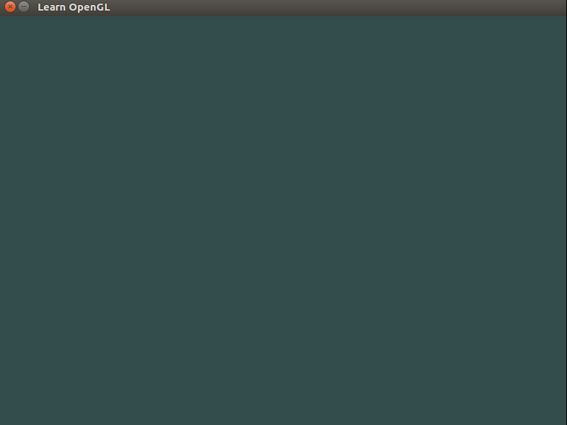

1. Lecture #1¶
This lecture gives a basic introduction to configuring the Arduino board on Linux,
as well as programming and uploading sketches on it.
We also study our very first OpenGL
example that opens a window when the program is run. The window closes upon
pressing the ESC key. All OpenGL examples dicussed in CS 428 have been
inspired by this source.
#include <GL/glew.h>
#include <GLFW/glfw3.h>
#include <iostream>
void key_callback(GLFWwindow* window,int key,int scancode,int action,int mode)
{
if(key==GLFW_KEY_ESCAPE && action==GLFW_PRESS)
glfwSetWindowShouldClose(window,GL_TRUE);
}
int main()
{
glfwInit();
glfwWindowHint(GLFW_CONTEXT_VERSION_MAJOR,3);
glfwWindowHint(GLFW_CONTEXT_VERSION_MINOR,3);
glfwWindowHint(GLFW_OPENGL_PROFILE,GLFW_OPENGL_CORE_PROFILE);
glfwWindowHint(GLFW_RESIZABLE,GL_FALSE);
GLFWwindow *window=glfwCreateWindow(800,600,"Learn OpenGL",nullptr,nullptr);
if(window==nullptr)
{
std::cout<<"Failed to create GLFW window!"<<std::endl;
glfwTerminate();
return -1;
}
glfwMakeContextCurrent(window);
glewExperimental=GL_TRUE;
if(glewInit()!=GLEW_OK)
{
std::cout<<"Failed to initialize GLEW!"<<std::endl;
return -1;
}
int width,height;
glfwGetFramebufferSize(window,&width,&height);
glViewport(0,0,width,height);
glfwSetKeyCallback(window,key_callback);
while(!glfwWindowShouldClose(window))
{
glfwPollEvents();
glClearColor(.2f,.3f,.3f,1.f);
glClear(GL_COLOR_BUFFER_BIT);
glfwSwapBuffers(window);
}
glfwTerminate();
return 0;
}
Save this file as main.cpp. To compile the code, run the following command:
g++ -O3 main.cpp -o window -lGLEW -lglfw -lGL -lX11 -lpthread -lXrandr -ldl -lXxf86vm -lXinerama -lXcursor -lrt -lm -std=c++11
This will create a binary window, and now if you execute the following command:
./window
then you should see a new window (like the one shown below) pop-up on your screen:
{kind=link}
If you’re running this command for the very first time, you’ll need to install some libraries. The following command may help:
sudo apt-get install libglu1-mesa-dev libglew-dev libglfw3-dev libxrandr-dev libxxf86vm-dev libxinerama-dev libxcursor-dev